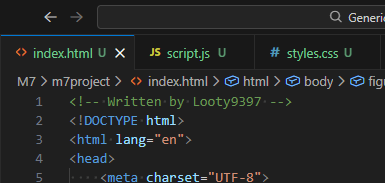

Walkinf() through the woods

Welcome to the Walkinf() Trail
I plan to expand this for personal enjoyment sometime. The expansion will not be submitted.
Begin
Take a break
END OF PATH
As soon as you stop to take a break, you find yourself back at the start of the path.
Restart